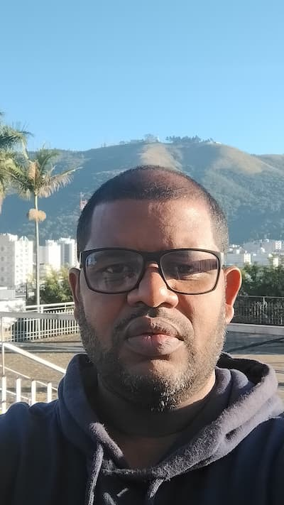

Reinaldo Dionísio Moreira | WDD 130

Olá! Meu nome é Reinaldo Dionísio Moreira e sou de Santa Luzia - MG, Brasil. Eu gosto de ler, assistir filmes e séries e gosto de futebol. Atualmente sou estudante da BYU Pathway Worldwilde.
Atualmente more em Santa Luzia - MG, mas já morei em São João da Boa Vista - SP, Rio de Janeiro - RJ e São Bernardo do Campo - SP. Fui missionário Em a Igreja de Jesus Cristo dos Santos dos Últimos Dias, servi na Missão Brasil Santa Maria - RS de agosto de 1998 a agosto de 2000. Sou casado e tenho 2 filhos, atualmente sirvo como conselheiro do quórum de Elderes. Sou corintiano, nivél de inglês básico. Sou analista de dados na Agência Reguladora de Transportes do Estado de Minas Gerais - ARTEMIG.